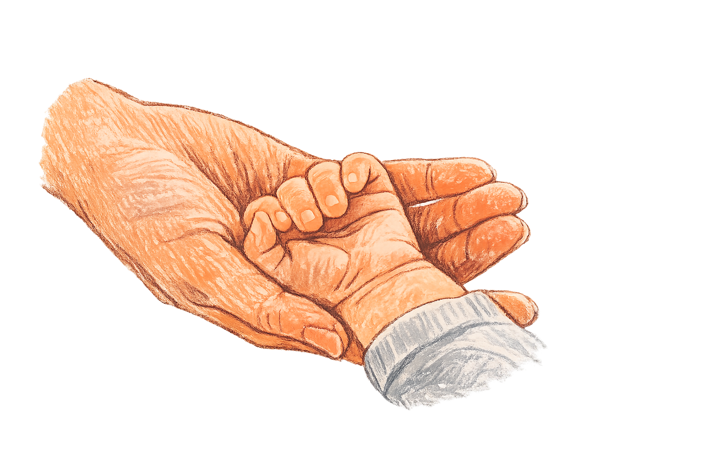
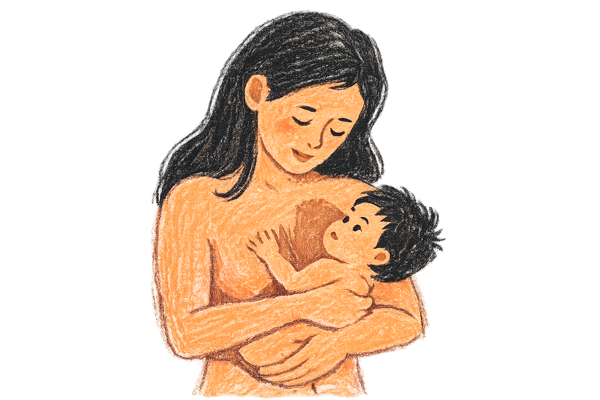
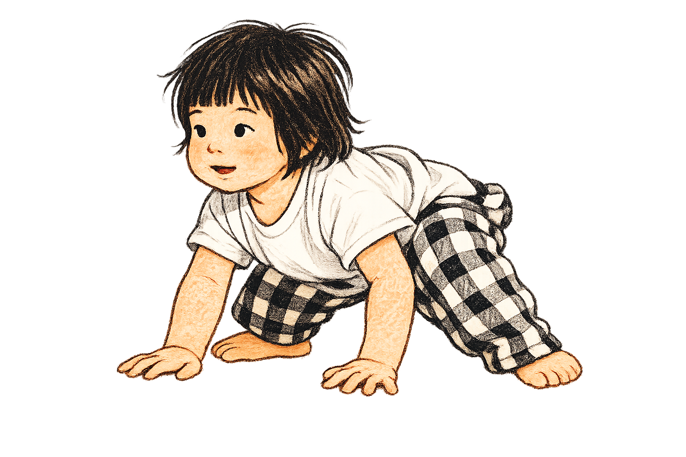
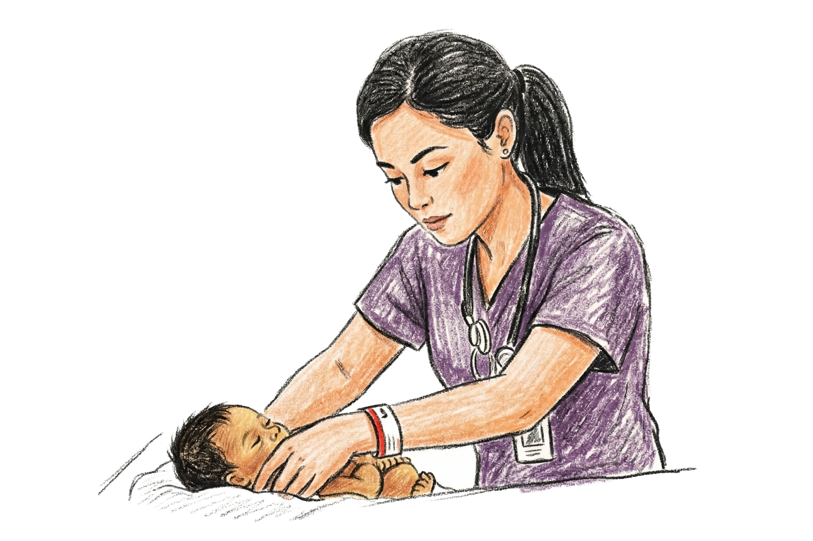

Further exploring the positive developments of tactile stimulation specifically with skin to skin contact between mothers and infants.

Sensory-discriminative touch is responsible for detecting and localizing external stimuli such as pressure, vibration, slip and texture across the skin's surface.
Both glabrous and hairy skin fibers contribute to this process, encoding different spatial and temporal properties of surfaces and objects (McGlone et al., 2014). This is carried out primarily through large, rapidly conducting myelinated Aβ afferents, which include several specialized receptor types: Meissner and Pacinian corpuscles respond to spatial and moving stimuli, while Merkel and Ruffini endings detect sustained mechanical pressure and skin stretch respectively (McGlone et al., 2014).
Touch is one of the earliest senses to emerge in fetal development, appearing as early as 8 weeks gestational age.
By 35 to 37 weeks of gestation, the maturing nervous system becomes capable of distinguishing between two distinct dimensions of tactile experience (Fabrizi et al., 2011). Low threshold mechanoreceptors (LTMs) are cutaneous receptors that respond to a range of sub-modalities including pressure, vibration, temperature, itch and pain, and can be understood through these two dimensions. The first is sensory-discriminative touch, which involves the localization of stimuli on the skin and the ability to explore and identify textures, pressure and the physical properties of objects. The second is motivational-affective touch, which captures the emotional quality of tactile experience — most notably affective touch, a specialized form of tactile stimulation characterized by gentle, slow and rhythmic stroking that plays a central role in emotional bonding and interpersonal connection (La Rosa et al., 2024; McGlone et al., 2014).
Motivational-affective touch is responsible for translating tactile input into emotional experience, forming the neurological basis for bonding and interpersonal connection.
Central to this process are C-tactile (CT) afferents; unmyelinated nerve fibers located at the outer boundary of the nervous system that transmit affective information such as pleasure, pain, fear and warmth from the skin to the brain (La Rosa et al., 2024). Their development begins remarkably early; at 25 weeks gestational age, neural reactions are already detectable at the somatosensory cortex, and by the third trimester, fetuses have been observed responding to maternal touch on the abdomen through movement (Croy et al., 2022). Structurally, CT afferents have a smaller diameter than other sensory fibers, resulting in a slower conduction velocity. Their response is optimally activated by light force and temperatures close to that of human skin, approximately 32 degrees Celsius, conditions that are naturally met during gentle maternal touch (La Rosa et al., 2024). CT afferents work in concert with Aβ fibers; when touch is detected, Aβ fibers target the somatosensory cortices to process its physical properties, while CT afferents project to the posterior insular cortex and dorsoanterior cingulate cortex — both regions integral to emotional processing and social bonding (Croy et al., 2022; McGlone et al., 2014).

Skin to skin contact stimulation begins early in the womb when fetuses begin to be react to maternal touch from the outside abdomen (Marx & Nagy, 2017). Post birth, mothers are encouraged to have skin to skin contact with their child as it shows to improve autonomic functioning and enhance child development (Feldman et al., 2014).
Skin-to-skin contact occurs between the mother and newborn infnats to encourage for attachment and bonding, physiological development, cognitive development and neural development.
Skin to skin contact occurring between mother and infant has been shown to increase neural activity in many regions of the brain, with the slow stroking of C fibers. This activates the superior temporal gyrus facilitating for social perception and interaction (Croy et al., 2022). Skin to skin contact enhances autonomic functioning and cognitive development enhancement in the infant; increasing maternal attachment behaviour during the post-partum period helping the mother (Feldman et al., 2014). With the infant placed directly onto the mother’s bare chest immediately after delivery until the first feeding is finished, this will encourage development of the infant during this sensitive period of growth.
Kangaroo Mother Care (KMC) has been a growing practice since developed in 1970, spreading awareness of the benefits to new mothers.
First developed in 1970 in Colombia due to the lack of hospital incubators. KMC is a structured version developed by health professionals to help encourage skin to skin contact and transition from neonatal care into home life (La Rosa et al., 2024). The WHO has established a guide to support mothers, families and health workers into efficiently practicing KMC, especially used for preterm and low-birth weight newborns (World Health Organization, 2023). The 3 elements of KMC include early continuous and prolonged skin-to-skin contact between mother and infant, exclusive breastfeeding if possible, and early discharge from hospital. The child is placed in an upright position and naked between the mother’s breasts, this gives access to familiar sounds of voice, heartbeat and smells when the fetus was in an intrauterine environment (Feldman et al.,2014).

Skin to skin contact during their sensitive period of growth have shown to provide long term impacts in areas of physiological developments, stress reactivity, bonding and social interactions and emotional regulation (Feldman et al., 2014).
Physiological effects can change when infant and mother interact in skin-to-skin contact, most notably through the release of oxytocin, stress regulation and stability of vital functions.
Birth can be a physiologically overwhelming experience for the infant, marked by a sharp rise in cortisol levels as they transition into the extrauterine environment. Skin-to-skin contact after birth has been shown to ease this transition by providing sensory continuity with the prenatal environment (Ferber et al., 2004). Through gentle touch, warmth, pressure and breastfeeding, oxytocin is released in both the mother and infant, working to reduce stress and regulate vital functions including temperature, heart rate, respiration, crying and gastrointestinal functioning (Bigelow & Power, 2020). At the autonomic level, respiratory sinus arrhythmia (RSA); a measure of heart rate variability linked to autonomic nervous system functioning, shows a higher baseline in infants who experience skin-to-skin contact, reflecting a more responsive hypothalamic-pituitary-adrenal (HPA) axis (Feldman et al., 2014). Collectively, the reduction in salivary cortisol and increase in oxytocin contribute to more organized sleep-wake cycles, with infants showing both faster entry into and longer maintenance of quiet sleep which can be a marker of improved brainstem regulation (Ferber et al., 2004; Valori et al., 2025).
The early social world of an infant is shaped significantly by the quality of physical contact they experience with their caregiver.
The release of oxytocin during skin-to-skin contact fosters a growing synchrony between mother and infant, strengthening social bonds and supporting the development of mutual regulation (Bigelow & Power, 2020). At the neural level, the posterior superior temporal sulcus; a region central to the formation of networks involved in social-emotional development and attachment, shows greater activation in infants who experience tactile stimulation, reflecting the pleasant and socially rewarding nature of maternal touch (Brauer et al., 2016; Feldman et al., 2014). This neural engagement has tangible social improvements; a study comparing four-month-old infants with and without maternal skin-to-skin contact found that those who experienced tactile stimulation showed superior face habituation, indicating a greater capacity to discriminate between faces and process social information more effectively (Della Longa et al., 2017).
Self-regulation in infancy lays the groundwork for how a child will engage with relationships, play and learning throughout their development.
Infants who experience skin-to-skin contact demonstrate better behavioural organization, showing improved capacity to regulate negative emotions and sustain engagement with their environment (Feldman et al., 2002). This early regulatory foundation carries forward into broader developmental gains, with skin-to-skin contact associated with positive trajectories in language development, cognitive skills and nonverbal communication with their mother over time (Bigelow & Power, 2020). Maternal contact also serves a protective function; when physical closeness is strong and consistent, infants display a higher threshold to aversive stimuli, are less easily distressed, and show greater readiness for exploration and sustained attention (Feldman et al., 2002). Underpinning these outcomes is the organization of the sleep-wake cycle; infants with skin-to-skin contact experience more regulated arousal states, which in turn creates the conditions necessary for curiosity and exploratory behaviour to emerge. Importantly, research suggests this relationship is sequential; infants who demonstrate sustained exploration of objects and their environment have typically established earlier regulatory milestones, including organized sleep-wake cycles, higher negative emotion thresholds and effective arousal modulation (Feldman et al., 2002).
Maternal roles are very crucial part of skin-to-skin contact, they allow for the facilitation of growth for their infnat. Not only, but they also experinece physiological benfits.
Skin-to-skin contact triggers the release of oxytocin in mothers, supporting breastfeeding through enhanced milk production while also promoting positive mood states, reducing anxiety and strengthening overall maternal behaviour (Valori et al., 2025). This hormonal shift is accompanied by heightened maternal responsiveness; mothers become more attuned to their infant's cues, engaging in more communicative and reciprocal exchanges that make the infant's signals appear clearer and more effective (Valori et al., 2025). Notably, the reduction in infant crying and improvement in autonomic regulation observed in skin-to-skin contact dyads may be partly attributable to this change in maternal state; when mothers feel more positively toward their infant, they create a calmer and more secure environment that itself reduces infant negative emotionality (Selman et al., 2020). This bidirectional dynamic extends into play as well; mothers who engage in skin-to-skin contact demonstrate a more synchronous caregiving style, showing better shared attention with their infant and allowing play interactions to unfold more naturally rather than redirecting too quickly (Feldman et al., 2002).
Skin-to-skin contact can be very impactful for pre-term infants who face a unique and vulnerable enter into the extrnal environment that requires specialized care.
Infants are typically born between 39 and 40 weeks of gestation. Those born before this window are considered preterm and frequently require extended hospital stays due to physiological instability, during which they are subjected to repeated medical procedures such as heel sticks for blood collection. Preterm infants who engage in skin-to-skin contact during this period show decreased cry time and fewer pain responses during such procedures, suggesting a meaningful analgesic effect of maternal contact (Ludington-Hoe & Smith, 1996). A further challenge for preterm infants is their characteristically abnormal reactivity to environmental stimuli; responses that tend toward either hyperreactivity or hyporeactivity, both of which reflect difficulty with self-regulation and inhibitory control. Skin-to-skin contact has been shown to bring this reactivity toward a more balanced mid-range, indicating an improved capacity to modulate responses to external stimuli (Feldman et al., 2002). Collectively, these gains in physiological and regulatory stability contribute to broader improvements in physical and cognitive development over time, enhancing outcomes across the infant's early life (Feldman et al., 2014).
How early touch shapes the developing brain.
White matter forms the brain's communication infrastructure, and its development during early infancy is highly sensitive to environmental experience.
White matter development can be meaningfully shaped by skin-to-skin contact through several interconnected pathways. By reducing physiological stress, skin-to-skin contact supports broader systemic functioning and creates a neurological environment conducive to growth. Simultaneously, the rich multisensory stimulation provided during skin-to-skin contact promotes experience-dependent plasticity, strengthening and refining developing neural circuits (Travis et al., 2025). The release of oxytocin during this contact further enhances neural plasticity, with observable effects on white matter structure itself; most notably through axonal growth, branching and myelination, the processes by which the brain builds faster and more efficient communication networks (Travis et al., 2025).
Organizational patterns are studied with EEG to understand how skin-to-skin contact can impact this.
Infants who experience skin-to-skin contact with their mothers demonstrate greater frontal alpha EEG asymmetry, a pattern of neural activity associated with enhanced emotional processing and cognitive maturation (Carozza & Leong, 2021). At the cortical level, more advanced cortico-cortical connections have been found to predominate in the right hemisphere, attributed to its greater responsiveness to sensory stimulation. As infants who receive skin-to-skin contact are exposed to richer and more consistent tactile input, there is evidence of accelerated maturation in this hemisphere — suggesting that the quality of early touch experience directly shapes how the brain organizes itself functionally (Scher et al., 2009).
The position of Kangaroo Mother Care can impact furhter development in motor skills and behaviour.
In kangaroo care, the infant is held upright in a flexed position, curled against the mother's chest. This posture supports the development of motor regulation while simultaneously mirroring the physical containment of the intrauterine environment, which has been shown to decrease arousal and promote self-regulation in the infant (Ludington-Hoe & Smith, 1996). These early regulatory gains appear to lay the foundation for longer-term cognitive and executive function development, with infants who experience kangaroo care demonstrating higher mental functioning, longer sustained attention and lower fussiness over time (Selman et al., 2020). Early signs of this growing awareness are observable during kangaroo care itself — infants begin lifting their heads away from the mother's chest, signalling an increasing curiosity and orientation toward their environment (Ludington-Hoe & Smith, 1996).
Specific regions in the brain are primed in response to maternal tactile stimulation.
The somatosensory cortex is activated in early infancy through motivational-affective touch, playing a foundational role in shaping the developing brain. Gentle stroking produces significant activation in both the ventral and dorsal postcentral gyrus, simultaneously engaging the primary and secondary somatosensory cortices (Tuulari et al., 2019). In infants who experience greater maternal tactile stimulation, this activation extends further; from the posterior and mid superior temporal sulcus to the temporoparietal junction and insula in the right hemisphere, with partial overlap at the Default Mode Network (Brauer et al., 2016). There is particular significance of the right posterior superior temporal sulcus, whose activity oscillates in proximity to the basal ganglia; a region central to reward processing. This suggests that maternal touch does not solely refine sensory perception but actively reinforces the neural pathways underlying emotional experience and social reward, positioning skin-to-skin contact as a neurologically meaningful interaction well beyond its physical comfort (Brauer et al., 2016).

With so many benefits of skin-to-skin contact, why is it not implemented in every hospital?
Skin-to-skin contact reamains inconsistent worldwide in the neonatal care setting.
Kangaroo Mother Care and skin-to-skin contact is widely recognized as a valuable intervention in neonatal development, yet its implementation remains inconsistent across hospitals globally. In countries such as Zambia, Saudi Arabia and Rwanda, skin-to-skin contact is not routinely integrated into NICU care for mothers and their newborns (Maguire et al., 2025). Research, surveys and clinical perspectives point to several contributing barriers. A primary challenge is staffing, facilitating for skin-to-skin contact requires coordination across multiple disciplines including pediatrics, obstetrics and labor nursing, and maintaining a full team with the mother and infant for an extended period is often considered logistically unfeasible (Alenchery et al., 2018). Adequate supervision is nevertheless essential to ensure correct infant positioning, appropriate temperature regulation for both mother and baby, and the availability of staff to address questions as they arise (Maguire et al., 2025). A second barrier is the inconsistent prioritization of skin-to-skin contact within NICU culture. With frequent staff turnover and variability in academic training, many healthcare workers may not have been formally introduced to the evidence base supporting this practice, highlighting an ongoing need for structured education and institutional advocacy (Alenchery et al., 2018; Maguire et al., 2025).